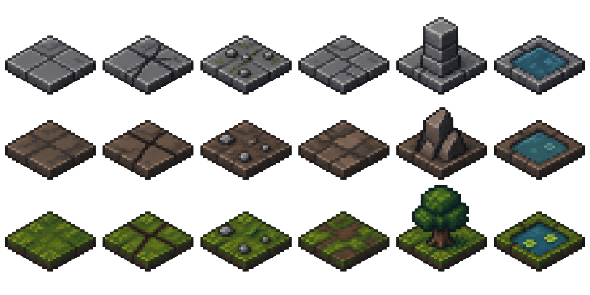

캐릭터 작업실 → 4방향 · 이동/공격 재생 · 장비 비교
64×64 타일 버퍼 · 64×32 발판 · 보간 없는 확대 · 테마별 바닥 4종. 이전 고밀도 버전 비교
실제 8×8 배치 데이터에 생성 타일을 조합한 HTML 미리보기입니다. 게임 엔진의 그래픽 변경은 아닙니다.
방 데이터 불러오는 중…
타일 불러오는 중…
문·열린 통로를 누르면 옆 구역으로 전환됩니다. 닫힌 문은 첫 터치로 열고 다시 터치하면 이동합니다. 상자는 터치하거나 버튼으로 열 수 있습니다. 방 연결·상자 상태는 이 미리보기 안에서만 유지되며, 게임 저장이나 보상에는 영향을 주지 않습니다. 횃불은 장식입니다.
뒤쪽 벽에는 문을 벽면에 맞춰 넣고, 앞쪽 벽·문 상단은 잘라내어 시야를 확보했습니다. 동굴·숲 바깥의 암반과 땅은 장식 영역이며 전투판은 그대로 8×8입니다. 캐릭터·애니메이션·장비 제작 계획
붉은 표식: 적 — 글자는 역할(A 돌격 · R 궁수 · S 방패 · U 지원), 아래 숫자는 wave(0 = 초기, 1+ = 증원, 반투명) · 반투명 녹색: 입구별 배치 후보 칸(entries) · 청록 테두리: 층 그래프상 실제 출구 · 노랑 마름모: 전리품 · 하늘색 N: 생존자 NPC · 파랑 테두리: 얕은 물(hazards) · 솟은 블록: 통행 차단 · 점무늬: 잔해
방 순서는 id = y*3 + x(0 북서 … 4 중앙 입구 … 8 남동). 인접 구역 버튼과 문 클릭은 3×3 격자 이웃으로 이동하며, 층 그래프에 없는 간선(예: 북↔중앙)은 미리보기 편의용이다. 방 설계 근거는 docs/stages/f1.ko.md.
위부터 던전·동굴·지하 숲. 왼쪽 네 칸은 바닥 변형, 다섯째는 장애물, 여섯째는 물입니다. 생성 원본은 고해상도이며 HTML이 각 타일을 실제 64×64 버퍼에 래스터화해 사용합니다. 실제 게임에는 아직 적용하지 않았습니다.
